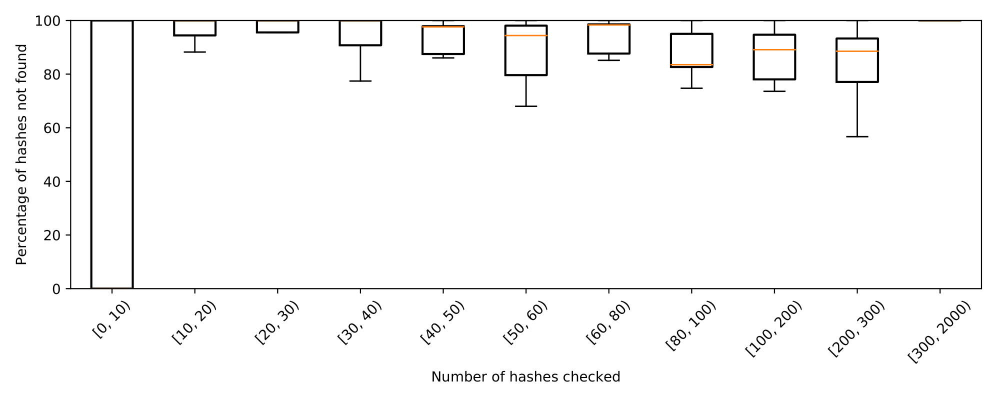

In this script we will show an example of using the VyPR Analysis Library to visualise the effectiveness of hash checking in optimising the Conditions upload process. The upload service deals with data gathered at the CMS Experiment at the LHC at CERN, providing mechanisms for segmenting large sets of conditions while releasing them to the production database. The service is split into client and server-side that communicate via HTTPS requests. Due to a large amount of data, optimising the data transfer to the server is of key importance.
One of the methods implemented with the aim of improving the upload service is hash checking - sending an HTTPS request to the server-side containing the list of hashes computed locally and getting the list of Payload hashes that were not found in the destination Conditions database as a response, therefore reducing the amount of data sent to the server by omitting the data that is already existing in the database. In some cases, this optimisation resulted in reducing the time taken by the upload by an order of magnitude since all the hashes were found.
However, it is possible that the most of the hashes are not found in the database, in which case the hash checking process could take a lot of time while not reducing the number of uploads significantly. VyPR monitored the upload process at runtime, gathering data we now want to analyse. The monitored service was checked for the requirement that the number of hashes not found should exceed 70% of the original list of hashes. The intuition here is that the optimisation should have a sufficient effect on the upload process that its removal would cause significantly different behaviour.
Begin with importing the necessary modules and setting up the verdict server.
import sys
sys.path.append("..")
import ast
import pprint
import matplotlib
import matplotlib.pyplot as plt
from matplotlib.pyplot import figure
import matplotlib.cbook as cbook
from dateutil.parser import isoparse
import traceback
import json
import argparse
import VyPRAnalysis as va
va.prepare("verdicts-hash-checking-analysis.db")
va.set_monitored_service_path("uploader-experiments/uploader/")
Iterate through the calls of the hash checking function to gather the observed number of the checked hashes during each call, as well as the number of those that were not found.
hash_checking_function = va.list_functions()[0]
all_calls = hash_checking_function.get_calls()
n_of_calls = len(all_calls)
hashes_length_to_not_found_list = {}
hash_lengths = []
for (n, call) in enumerate(all_calls):
if n % 100 == 0:
print("Processed %i/%i calls." % (n, n_of_calls))
# there will be a single verdict
verdict = call.get_verdicts()[0]
# in case we only care about failing verdicts replace the conditional with:
#if verdict.verdict == 0:
if True:
observations = verdict.get_observations()
lhs_obs = filter(lambda obs : obs.sub_index == 0, observations)[0]
rhs_obs = filter(lambda obs : obs.sub_index == 1, observations)[0]
total_hashes = ast.literal_eval(lhs_obs.observed_value)["hashes"]
if total_hashes in hash_lengths:
length_index = hash_lengths.index(total_hashes)
else:
hash_lengths.append(total_hashes)
length_index = len(hash_lengths)-1
not_found = ast.literal_eval(rhs_obs.observed_value)["not_found"]
if length_index not in hashes_length_to_not_found_list:
hashes_length_to_not_found_list[length_index] = [not_found]
else:
hashes_length_to_not_found_list[length_index].append(not_found)
Convert the gathered lengths of the not found and all checked hashes into percentage values.
hashes_length_to_percentages = {}
for hash_length_index in hashes_length_to_not_found_list:
n_of_hashes_given = hash_lengths[hash_length_index]
percentages = []
for not_found in hashes_length_to_not_found_list[hash_length_index]:
percentages.append(100*(float(not_found)/float(n_of_hashes_given)))
hashes_length_to_percentages[hash_length_index] = percentages
Manually construct the bins for hash lengths and group the percentages into corresponding bins.
bins = [[0, 10], [10, 20], [20, 30], [30, 40], [40, 50], [50, 60], [60, 80], [80, 100], [100, 200], [200, 300], [300, 2000]]
groups = [[] for bin in bins]
bin_as_label = lambda bin : "[%i, %i)" % tuple(bin)
bin_strings = map(bin_as_label, bins)
# put hash lengths into bins
for (length_index, hash_length) in enumerate(hash_lengths):
for (n, bin) in enumerate(bins):
if bin[0] <= hash_length < bin[1]:
groups[n] += hashes_length_to_percentages[length_index]
Finally, create the plot showing the boxplots showing the distribution of the percentage of the hashes not found, grouped by the total number of hashes checked. We see that Conditions uploads which propose a high number of Payloads often upload Conditions that do not already exist. From this we take two key results:
# derive boxplot statistics
stats = cbook.boxplot_stats(groups, labels=bin_strings)
# draw plot
fig, ax = plt.subplots()
fig.set_figheight(4)
fig.set_figwidth(10)
plt.xticks(rotation=45)
plt.ylim([0, 100])
plt.xlabel("Number of hashes checked")
plt.ylabel("Percentage of hashes not found")
ax.bxp(stats, showfliers=False)
plt.tight_layout()
plt.show()
